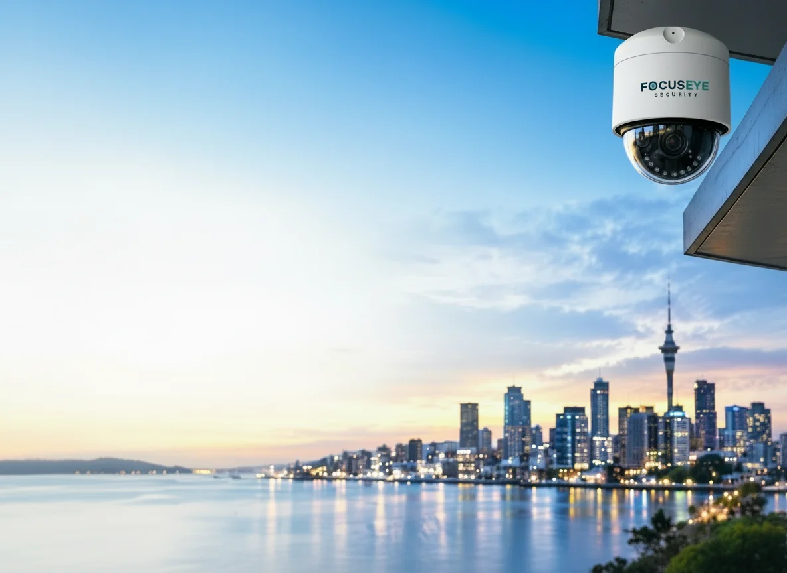

Trusted Brands
View all brands →
FocusEye Security designs, supplies and installs CCTV systems for Auckland homes, shops, offices, warehouses and multi-site businesses. From our head office in East Tamaki, our installers cover the wider Auckland region — so you get one local team for the site survey, the installation and the support afterwards.
We install high-resolution IP cameras from trusted brands like Hikvision, Dahua and Axis, record to a secure NVR on your premises, and set everything up so you can watch live and recorded footage from your phone. Every job starts with a free site survey and a fixed, itemised quote.

Based in East Tamaki, we install and support systems right across Auckland — no out-of-town contractors.
Experience across residential, retail, industrial and commercial sites of every size.
Quality certified equipment from world-leading brands, backed by a 5-year warranty.
Optional 24/7 remote monitoring and ongoing maintenance plans once your system is live.
A well-designed home security camera system deters burglars, lets you check on your property from anywhere and gives police clear footage if something does happen. We position cameras to cover driveways, entry doors, side paths and backyards without pointing into your neighbours' properties.
For shops, offices, warehouses, construction sites and multi-site businesses, we design scalable surveillance that protects staff and stock, supports health and safety, and integrates with access control and alarms.
Call us on 09 972 4227 or send an enquiry. Tell us about your property, what you want to protect and any problems you've had.
A technician visits your Auckland home or business to check entry points, blind spots, lighting, cabling routes and network. We then design camera placement for full coverage.
You receive a clear proposal listing every camera, the recorder, storage and labour — no hidden extras.
Our installers mount the cameras, run and terminate cabling, set up the NVR and test every view, day and night settings included.
We set up the app on your phone, show you how to find and export footage, and remain your local contact for support and servicing.
Every property is different, so the price of a CCTV system depends on a few key factors:
Ultimate Home Package — 8-camera 4K Ultra HD system.
$1,599 + GST
See our current CCTV deals and combo kits, or request a fixed quote tailored to your property.
Get My Free QuoteOur East Tamaki base puts us close to East and South Auckland, and our installers travel across the Auckland region for home and commercial CCTV installations.
East Tamaki, Botany, Howick, Pakuranga, Half Moon Bay, Highland Park, Flat Bush, Dannemora, Bucklands Beach.
Manukau, Papatoetoe, Ōtara, Manurewa, Takanini, Papakura, Māngere, Wiri, Ōtāhuhu.
Auckland CBD, Penrose, Ellerslie, Mt Wellington, Newmarket, Epsom, Remuera, Mt Eden, Onehunga.
Takapuna, Albany, Glenfield, Devonport, Northcote, Browns Bay, Rosedale, Birkenhead.
Henderson, New Lynn, Te Atatū, Massey, Avondale, Kumeū, Glen Eden, Titirangi.
If your suburb isn't listed, get in touch — we'll confirm coverage and book a site survey.
The cost depends on the number of cameras, camera resolution, recording storage and how difficult the cable runs are. As a guide, our Ultimate Home Package — an 8-camera 4K Ultra HD system — is $1,599 + GST. We give every customer a fixed, itemised quote after a free site survey, so there are no surprises.
Most home systems of 4 to 8 cameras are installed in a single day. Larger commercial sites, multi-building properties or systems combined with access control are scheduled over several days, and we agree the timeline with you before work starts.
Yes. Every system we install is set up for remote viewing on your phone, tablet or computer. Before we leave, we install the app, connect it to your recorder and show you how to view live video, play back footage and manage alerts.
For most Auckland homes and businesses we recommend wired PoE (Power over Ethernet) cameras. A single cable carries both power and data, which gives a more reliable picture than Wi-Fi and means no batteries to charge. Wireless cameras can still suit places where running a cable is not practical.
We supply and install leading brands including Hikvision, Dahua, HiLook, Axis, Hanwha, TVT and Raysharp. We recommend the brand and model that best suits your site, budget and features you need.
Yes. Our systems come with a 5-year warranty, and because we are based in East Tamaki, local support is close by if you ever need help after installation.
Talk to an Auckland CCTV specialist today. We'll visit your property, recommend the right cameras and give you a fixed quote — with no obligation.